Cátedra 7: Procesos Termodinámicos
Clasificación de los procesos según qué variable se mantiene constante, cálculo del trabajo como área bajo la curva $P$-$V$, y condiciones para la reversibilidad.
Temas que cubre
- Proceso cuasi-estático: definición y condiciones (sin histéresis, sin fricción)
- Proceso reversible vs. irreversible
- Isotérmico ($T = \text{cte}$): hipérbola en diagrama $P$-$V$
- Adiabático ($\bar{\delta}Q = 0$): sin flujo de calor, pared adiabática
- Isocórico ($V = \text{cte}$): sin trabajo, todo el calor va a $\Delta U$
- Isobárico ($P = \text{cte}$): el más fácil de integrar en laboratorio
- Trabajo como área bajo la curva $P$-$V$
- Trabajo en proceso isotérmico del gas ideal: $W = -Nk_BT\ln(V_f/V_i)$
Conceptos clave
Proceso cuasi-estático
Se realiza infinitamente despacio, de modo que en cada instante el sistema está en equilibrio y las variables macroscópicas ($P$, $T$, $V$) están bien definidas. Permite usar la ecuación de estado en todo momento. Es una idealización: en la práctica se aproxima haciendo el proceso muy lento.
Proceso reversible
Un proceso cuasi-estático y sin fricción (sin memoria). Puede invertirse exactamente: el sistema y el entorno quedan en su estado original. Los procesos reales siempre son irreversibles debido a la fricción y a las inhomogeneidades.
Proceso adiabático
No hay intercambio de calor con el entorno ($\bar{\delta}Q = 0$). Se puede lograr con paredes perfectamente aislantes, o haciéndolo tan rápido que el calor no tiene tiempo de fluir. En procesos adiabáticos, todo el trabajo va a energía interna.
Diagrama $P$-$V$
Representación del proceso en el plano presión-volumen. El trabajo realizado por el gas en un proceso cuasi-estático es el área bajo la curva (con signo). Un ciclo completo en el diagrama $P$-$V$ encierra un área que representa el trabajo neto.
Fórmulas fundamentales


Qué hay que entender
- Identifica qué variable se mantiene constante: eso define el tipo de proceso y simplifica la integral del trabajo.
- El diagrama $P$-$V$ es tu mejor amigo: dibuja el proceso, identifica el área que representa el trabajo, y verifica el signo.
- Para procesos reversibles: el trabajo es único y mínimo (compresión) o máximo (expansión) entre todos los posibles caminos.
- Para el gas ideal isotérmico: $\Delta U = 0$, así que $Q = -W$. Nunca olvides verificar que la ecuación $PV = Nk_BT$ se satisface con $T$ constante.
- El proceso adiabático se aborda en el próxima cátedra, donde aparece el exponente $\gamma = C_P/C_V$.